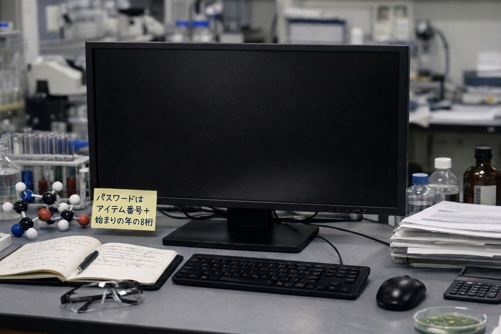

SAEKI_KOJI
主任研究員：佐伯 浩二
佐伯氏のデスク

ASSIGNMENT
特殊生物資源開発部 / 御臥山プロジェクト
CURRENT STATUS
久木村・守谷邸にて検体No.104を観測中
LOG_MEMO [19XX/08/12]
「村長（守谷氏）との契約更新完了。86,000,000円の振込を確認。今期の『サンプル（給仕）』は非常に質が高い。菌糸の定着率が以前より15%向上している。」
SECURITY WARNING
SECURITY WARNING
本研究データの無断持ち出し、および村落住民への情報漏洩は『不浄物処理』の対象となります。